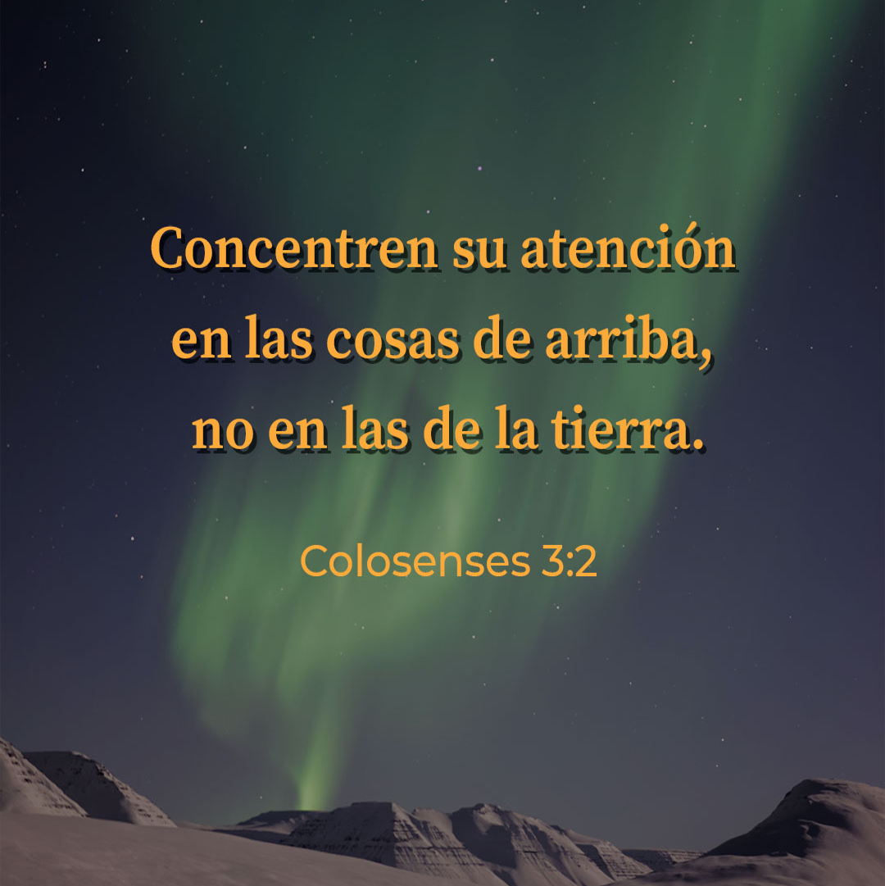

10 Y él le dijo: ¿Qué has hecho? La voz de la sangre de tu hermano clama a mí desde la tierra.
11 Ahora, pues, maldito seas tú de la tierra, que abrió su boca para recibir de tu mano la sangre de tu hermano.
13 No matarás.
9 ¿No sabéis que los injustos no heredarán el reino de Dios? No erréis; ni los fornicarios, ni los idólatras, ni los adúlteros, ni los afeminados, ni los que se echan con varones,
10 ni los ladrones, ni los avaros, ni los borrachos, ni los maldicientes, ni los estafadores, heredarán el reino de Dios.
11 Y esto erais algunos; mas ya habéis sido lavados, ya habéis sido santificados, ya habéis sido justificados en el nombre del Señor Jesús, y por el Espíritu de nuestro Dios.
